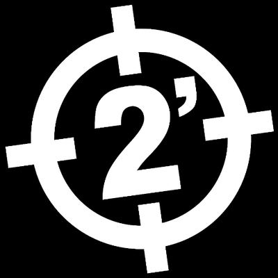

Dos Minutos - 2'
La mejor banda Punk Rock del mundo

Logo con el cual se reconoce a la banda conformada en 1987, en Valentín Alsina
(Lanús) provincia de Buenos Aires, Argentina.
La mejor banda Punk Rock del mundo